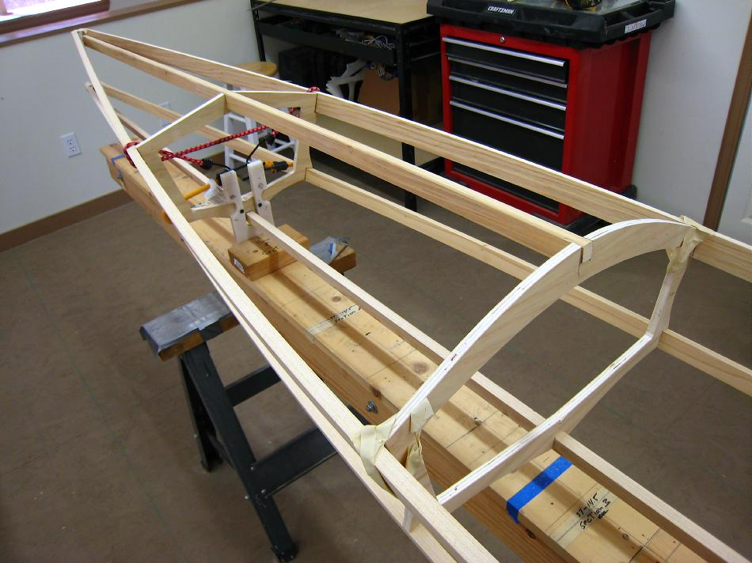

| Attaching Stringers | Menu Previous Page Next Page |
|

The 1" X 5/8" forward deck stringers are trial fitted at this time. The notches in the cross sections are 3/4"X 5/8", and the stringers are 1" X 5/8". You could notch the deck stringers if you want them to sit flush as in the pic above . Cutting the notch in the cross section any deeper could weaken the cross section.
|
|